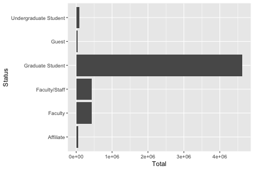
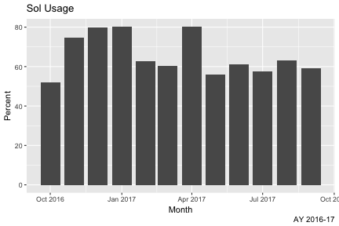
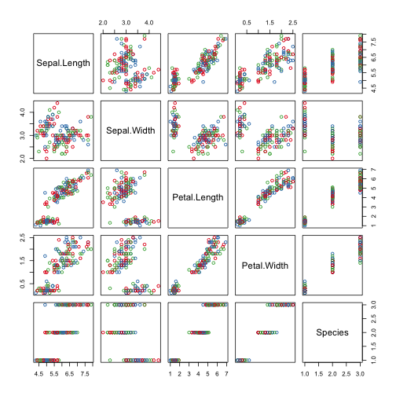
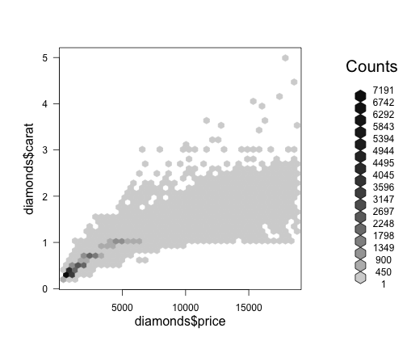
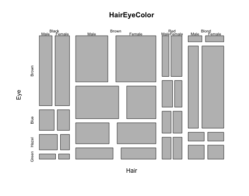
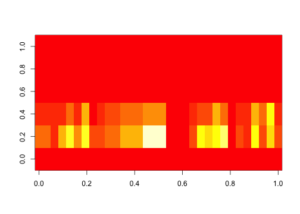
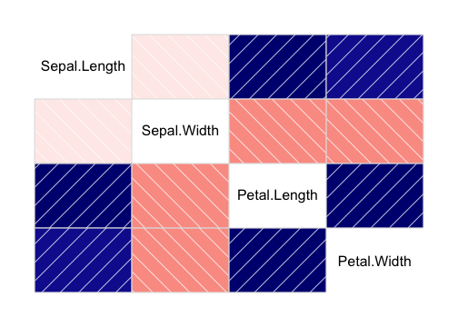
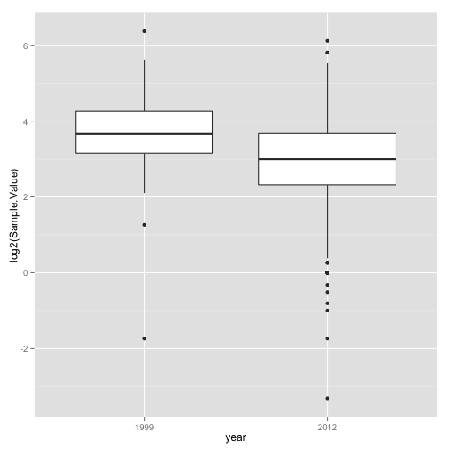

- R is a dialect of the S language
- S was initiated at the Bell Labs as an internal statistical analysis environment.
- Most well known implementation is S‐plus (most recent stable release was in 2010)
- R was first announced in 1993.
- The R core group was formed in 1997, who controls the source code of R (written in C)
- R 1.0.0 was released in 2000
- The current version is 3.2.2
Programming in R
A short introduction
Alex Pacheco
LTS Research Computing
History
Features
- R is a dialect of the S language
- Language designed for statistical analysis
- Similar syntax
- Available on most platform/OS
- Rich data analysis functionalities and sophisticated graphical capabilities
- Active development and very active community
- CRAN: The Comprehensive R Archive Network
- Source code and binaries, user contributed packages and documentation
- More than 6,000 packages available on CRAN as of last week
- Free to use
Alternatives to R
- S-PLUS: commercial verison of S
- Gretl: open-source statistical package, mainly for econometrics
- SPSS: widely used program for statistical analysis in social science
- PSPP: free alternative to SPSS
- SAS: proprietary software that can be used with very large datasets such as census data
- STATA: proprietary software that is often used in economics and epidemiology
- MATLAB: proprietary software used widely in the mathematical sciences and engineering
- GNU Octave: free alternative to MATLAB
- Python: general programming language
Installing R
- R can be installed on Windows, Mac OSX and Linux from CRAN.

Running R
- RStudio is the most popular (de facto) environment for running R on all platforms.
- From Command Line on *NIX
- Enter
Ron the command line (if you have modified yourPATHcorrectly)
- Enter
- Batch Mode on *NIX
- Use the
Rscript filename.Rcommand to execute commands from a file,filename.R
- Use the
cat hello.R
## print("Hello World!")
Rscript hello.R
## [1] "Hello World!"
RStudio
- free and open source IDE for R. Can be installed on Windows, Mac OSX and Linux.
- user interface comparable to other IDEs or software such as MATLAB.
- more suited for development
Get Started with R
- Use the console to use R as a simple calculator
1+2
## [1] 3
- The assignment symbol is "<-". The classical "=" symbol can also be used
a=2+3
b<-10/a
a
## [1] 5
b
## [1] 2
Get Started with R
- install packages from CRAN, for e.g. knitr
install.packages('knitr')
- load a library, for e.g. knitr
library(knitr)
- Help from command line
?<command name>
??<part of command name/topic>
or search in the help page in RStudio
getwd(): display current working directorysetwd('dir'): change current working director todir
Data Classes
- R has five atomic classes
- Numeric
- Double is equivalent to numeric.
- Numbers in R are treated as numeric unless specified otherwise.
- Integer
- Complex
- Character
- Logical
- TRUE or FALSE
- You can convert data from one type to the other using the
as.<Type>functions - To check the class of an object, use the
is.<Type>function.
Example
a <- 3
b <- sqrt(a)
b
## [1] 1.732051
c <- 2i
d <- TRUE
d
## [1] TRUE
as.numeric(d); as.character(b); is.complex(c)
## [1] 1
## [1] "1.73205080756888"
## [1] TRUE
Data Objects‐ Vectors
- Vectors can only contain elements of the same class
- Vectors can be constructed by
- Using the
c()function (concatenate)
- Using the
- Coercion will occur when mixed objects are passed to the
c()function, as if theas.<Type>()function is explicitly called- Using the
vector()function
- Using the
- One can use
[index]to access individual element- Indices start from 1
Examples
# "#" indicates comment
# "<-" performs assignment operation (you can use "=" as well, but "<-" is preferred)
# numeric (double is the same as numeric)
d <- c(1,2,3)
# character
d <- c("1","2","3")
# you can covert at object with as.TYPE
# as. numeric changes the character vector created above to numeric
as.numeric(d)
## [1] 1 2 3
# The conversion doesn't always work though
as.numeric("a")
## Warning: NAs introduced by coercion
## [1] NA
Examples (contd)
x <- c(0.5, 0.6) ## numeric
x <- c(TRUE, FALSE) ## logical
x <- c(T, F) ## logical
x <- c("a", "b", "c") ## character
# The ":" operator can be used to generate integer sequences
x <- 9:29 ## integer
x <- c(1+0i, 2+4i) ## complex
x <- vector("numeric", length = 10)
# Coercion will occur when objects of different classes are mixed
y <- c(1.7, "a") ## character
y <- c(TRUE, 2) ## numeric
y <- c("a", TRUE) ## character
# Can also coerce explicitly
x <- 0:6
class(x)
## [1] "integer"
as.logical(x)
## [1] FALSE TRUE TRUE TRUE TRUE TRUE TRUE
Vectorized Operations
- Lots of R operations process objects in a vectorized way
- more efficient, concise, and easier to read.
x <- 1:4; y <- 6:9
x + y
## [1] 7 9 11 13
x > 2
## [1] FALSE FALSE TRUE TRUE
x * y
## [1] 6 14 24 36
print( x[x >= 3] )
## [1] 3 4
Data Objects - Matrices
- Matrices are vectors with a dimension attribute
- R matrices can be constructed
- Using the
matrix()function- Passing an dim attribute to a vector
- Using the
cbind()orrbind()functions
- Using the
- R matrices are constructed column‐wise
- One can use
[<index>,<index>]to access individual element
Example
# Create a matrix using the matrix() function
m <- matrix(1:6, nrow = 2, ncol = 3)
m
## [,1] [,2] [,3]
## [1,] 1 3 5
## [2,] 2 4 6
dim(m)
## [1] 2 3
attributes(m)
## $dim
## [1] 2 3
Example
# Pass a dim attribute to a vector
m <- 1:10
m
## [1] 1 2 3 4 5 6 7 8 9 10
dim(m) <- c(2, 5)
m
## [,1] [,2] [,3] [,4] [,5]
## [1,] 1 3 5 7 9
## [2,] 2 4 6 8 10
Example
# Row binding and column binding
x <- 1:3
y <- 10:12
cbind(x, y)
## x y
## [1,] 1 10
## [2,] 2 11
## [3,] 3 12
rbind(x, y)
## [,1] [,2] [,3]
## x 1 2 3
## y 10 11 12
Example
# Slicing
m
## [,1] [,2] [,3] [,4] [,5]
## [1,] 1 3 5 7 9
## [2,] 2 4 6 8 10
# element at 2nd row, 3rd column
m[2,3]
## [1] 6
# entire i<sup>th</sup> row of m
m[2,]
## [1] 2 4 6 8 10
# entire j<sup>th</sup> column of m
m[,3]
## [1] 5 6
Data Objects - Lists
- Lists are a special kind of vector that contains objects of different classes
- Lists can be constructed by using the
list()function - Lists can be indexed using
[[ ]]
# Use the list() function to construct a list
x <- list(1, "a", TRUE, 1 + 4i)
x
## [[1]]
## [1] 1
##
## [[2]]
## [1] "a"
##
## [[3]]
## [1] TRUE
##
## [[4]]
## [1] 1+4i
Data Objects - Data Frames
- Data frames are used to store tabular data
- They are a special type of list where every element of the list has to have the same length
- Each element of the list can be thought of as a column
- Data frames can store different classes of objects in each column
- Data frames also have a special attribute called
row.names - Data frames are usually created by calling
read.table()orread.csv() - Can be converted to a matrix by calling
data.matrix()
Names
- R objects can have names
# Each element in a vector can have a name
x <- 1:3
names(x)
## NULL
names(x) <- c("a","b","c")
names(x)
## [1] "a" "b" "c"
x
## a b c
## 1 2 3
Names (contd)
# Lists
x <- list(a = 1, b = 2, c = 3)
x
## $a
## [1] 1
##
## $b
## [1] 2
##
## $c
## [1] 3
# Names can be used to refer to individual element
x$a
## [1] 1
Names (contd)
# Columns and rows of matrices
m <- matrix(1:4, nrow = 2, ncol = 2)
dimnames(m) <- list(c("a", "b"), c("c", "d"))
m
## c d
## a 1 3
## b 2 4
Querying Object Attributes
- The
class()function - The
str()function - The
attributes()function reveals attributes of an object (does not work with vectors)- Class
- Names
- Dimensions
- Length
- User defined attributes
- They work on all objects (including functions)
Example
m <- matrix(1:10, nrow = 2, ncol = 5)
str(matrix)
## function (data = NA, nrow = 1, ncol = 1, byrow = FALSE, dimnames = NULL)
str(m)
## int [1:2, 1:5] 1 2 3 4 5 6 7 8 9 10
str(str)
## function (object, ...)
Data Class - Factors
- Factors are used to represent categorical data.
- Factors can be unordered or ordered.
- Factors are treated specially by modelling functions like
lm()andglm()
# Use the factor() function to construct a vector of factors
# The order of levels can be set by the levels keyword
x <- factor(c("yes", "yes", "no", "yes", "no"), levels = c("yes", "no"))
x
## [1] yes yes no yes no
## Levels: yes no
Date and Time
- R has a Date class for date data while times are represented by POSIX formats
- One can convert a text string to date using the
as.Date()function - The
strptime()function can deal with dates and times in different formats. - The package "
lubridate" provides many additional and convenient features
# Dates are stored internally as the number of days since 1970-01-01
x <- as.Date("1970-01-01")
x
## [1] "1970-01-01"
as.numeric(x)
## [1] 0
x+1
## [1] "1970-01-02"
Data and Time (contd)
# Times are stored internally as the number of seconds since 1970-01-01
x <- Sys.time() ; x
## [1] "2015-10-20 13:03:02 EDT"
as.numeric(x)
## [1] 1445360583
p <- as.POSIXlt(x)
names(unclass(p))
## [1] "sec" "min" "hour" "mday" "mon" "year" "wday"
## [8] "yday" "isdst" "zone" "gmtoff"
p$sec
## [1] 2.568502
Missing Values
- Missing values are denoted by
NAorNaNfor undefined mathematical operations.is.na()is used to test objects if they areNAis.nan()is used to test forNaNNAvalues have a class also, so there are integerNA, characterNA, etc.- A
NaNvalue is alsoNAbut the converse is not true
x <- c(1,2, NA, 10,3)
is.na(x)
## [1] FALSE FALSE TRUE FALSE FALSE
is.nan(x)
## [1] FALSE FALSE FALSE FALSE FALSE
Missing Values (contd)
x <- c(1,2, NaN, NA,4)
is.na(x)
## [1] FALSE FALSE TRUE TRUE FALSE
is.nan(x)
## [1] FALSE FALSE TRUE FALSE FALSE
Arithmetic Functions
| Function | Description |
|---|---|
exp() | Exponentiation |
log() | Natural Logarithm |
log10() | Logarithm to base 10 |
sqrt() | square root |
abs() | absolute value |
sin() | sine |
cos() | cosine |
floor() | |
ceiling() | rounding of numbers |
round() |
Simple Statistic Functions
| Function | Description |
|---|---|
min() | minimum value |
max() | maximum value |
which.min() | location of minimum |
which.max() | location of maximum |
pmin() | elementwise minima of several vectors |
pmax() | elementwise maxima of several vectors |
sum() | sum of elements of a vector |
mean() | mean of elements of a vector |
prod() | products of elements of a vector |
Distributions and Random Variables
- For each distribution R provides four functions: density (
d), cumulative density (p), quantile (q), and random generation (r)- The function name is of the form
[d|p|q|r]<name of distribution> - e.g.
qbinom()gives the quantile of a binomial distribution
- The function name is of the form
| Distribution | Distribution name in R |
|---|---|
| Uniform | unif |
| Binomial | binom |
| Poisson | pois |
| Geometric | geom |
| Gamma | gamma |
| Normal | norm |
| Log Normal | lnorm |
| Exponential | exp |
| Student’s t | t |
Examples: Distributions and Random Variables
# Random generation from a uniform distribution.
runif(10, 2, 4)
## [1] 2.540423 3.062155 2.850793 3.010730 2.270031 3.610752 2.354025
## [8] 2.368707 2.350576 2.400664
# You can name the arguments in the function call.
runif(10, min = 2, max = 4)
## [1] 3.503867 2.096495 2.365290 3.849260 2.112131 2.725666 3.243201
## [8] 3.366107 3.763836 3.486250
# Given p value and degree of freedom, find the t-value.
qt(p=0.975, df = 8)
## [1] 2.306004
# The inverse of the above function call
pt(2.306, df = 8)
## [1] 0.9749998
User Defined Functions
- Similar to other languages, functions in R are defined by using the
function()directives - The return value is the last expression in the function body to be evaluated.
- Functions can be nested
- Functions are R objects
- For example, they can be passed as an argument to other functions
newDef <- function(a,b)
{
x = runif(10,a,b)
mean(x)
}
newDef(-1,1)
## [1] -0.03486707
Control Structures
- Control structures allow one to control the flow of execution.
if … else | testing a condition |
for | executing a loop (with fixed number of iterations) |
while | executing a loop when a condition is true |
repeat | executing an infinite loop |
break | breaking the execution of a loop |
next | skipping to next iteration |
return | exit a function |
Testing conditions
# Comparisons: <,<=,>,>=,==,!=
# Logical operations: !, &&, ||
if(x > 3 && x < 5) {
print ("x is between 3 and 5")
} else if(x <= 3) {
print ("x is less or equal to 3")
} else {
print ("x is greater or equal to 5")
}
For Loops
x <- c("a", "b", "c", "d")
# These loops have the same effect
# Loop through the indices
for(i in 1:4) {
print(x[i])
}
## [1] "a"
## [1] "b"
## [1] "c"
## [1] "d"
# Loop using the seq_along() function
for(i in seq_along(x)) {
print(x[i])
}
## [1] "a"
## [1] "b"
## [1] "c"
## [1] "d"
For Loops (contd)
# Loop through the name
for(letter in x) {
print(letter)
}
## [1] "a"
## [1] "b"
## [1] "c"
## [1] "d"
for(i in 1:4) print(x[i])
## [1] "a"
## [1] "b"
## [1] "c"
## [1] "d"
while loops
- The
whileloop can be used to repeat a set of instructions - It is often used when you do not know in advance how often the instructions will be executed.
- The basic format for a
whileloop iswhile(cond) expr
sum <- 1
while ( sum < 11 )
{
sum <- sum + 2;
print(sum);
}
## [1] 3
## [1] 5
## [1] 7
## [1] 9
## [1] 11
sum <- 12
while (sum < 11 )
{
sum <- sum + 2;
print(sum);
}
repeat loops
- The
repeatloop is similar to thewhileloop. - The difference is that it will always begin the loop the first time. The
whileloop will only start the loop if the condition is true the first time it is evaluated. - Another difference is that you have to explicitly specify when to stop the loop using the
breakcommand.
sum <- 1
repeat
{
sum <- sum + 2;
print(sum);
if (sum > 11)
break;
}
## [1] 3
## [1] 5
## [1] 7
## [1] 9
## [1] 11
## [1] 13
sum <- 12
repeat
{
sum <- sum + 2;
print(sum);
if (sum > 11)
break;
}
## [1] 14
break and next statements
- The
breakstatement is used to stop the execution of the current loop.- It will break out of the current loop.
- The
nextstatement is used to skip the statements that follow and restart the current loop.- If a
forloop is used then thenextstatement will update the loop variable.
- If a
x <- rnorm(5)
for(lupe in x)
{
if (lupe > 2.0)
next
if( (lupe<0.6) && (lupe > 0.5))
break
cat("The value of lupe is ",lupe,"\n");
}
## The value of lupe is -0.9906826
## The value of lupe is 0.8846128
## The value of lupe is 0.4624723
## The value of lupe is 0.459107
## The value of lupe is -0.2619124
The apply Function
- The
apply()function evaluate a function over the margins of an array- More concise than the for loops (not necessarily faster)
# X: array objects
# MARGIN: a vector giving the subscripts which the function will be applied over
# FUN: a function to be applied
str(apply)
## function (X, MARGIN, FUN, ...)
x <- matrix(rnorm(200), 20, 10)
# Row means
apply(x, 1, mean)
## [1] -0.1607801288 -0.3990043157 0.5215385747 -0.0234976926 -0.1052717754
## [6] -0.1080847782 0.6623402891 0.1956335883 -0.0001507021 -0.2144411351
## [11] -0.1144595219 0.2850910675 -0.1541681598 0.2695134427 -0.2127334255
## [16] 0.2633009895 0.0774168428 -0.1273839101 -0.1305101702 -0.0689028991
The apply Function (contd)
# Column sums
apply(x, 2, sum)
## [1] 0.6863302 1.2257178 -4.1181183 -3.7185748 6.6033673 4.6015972
## [7] 5.5598493 -1.4522218 -3.0266048 -1.8068803
# 25th and 75th Quantiles for rows
apply(x, 1, quantile, probs = c(0.25, 0.75))
## [,1] [,2] [,3] [,4] [,5] [,6]
## 25% -0.43379332 -0.9414187 0.07680031 -0.5053064 -0.28459224 -0.9926439
## 75% 0.06850873 0.2171644 0.90437102 0.3723524 0.08753514 0.8348046
## [,7] [,8] [,9] [,10] [,11] [,12]
## 25% 0.3588535 -0.3559191 -0.6400568 -0.7581874 -0.554790235 -0.6521134
## 75% 1.3815400 0.7860163 0.9570463 0.4132340 -0.003249336 0.9858115
## [,13] [,14] [,15] [,16] [,17] [,18]
## 25% -0.616666565 -0.4577558 -0.4680271 -0.4907663 -0.3341646 -0.4733757
## 75% 0.006607191 1.1035421 0.1496034 1.1170269 0.2509508 0.3292204
## [,19] [,20]
## 25% -0.8950189 -1.0422849
## 75% 0.6356963 0.6231946
The apply Function (contd)
dim(x)
## [1] 20 10
# Change the dimensions of x
dim(x) <- c(2,2,50)
# Take average over the first two dimensions
apply(x, c(1, 2), mean)
## [,1] [,2]
## [1,] -0.06859078 0.1452351
## [2,] -0.11588014 0.1303250
rowMeans(x, dims = 2)
## [,1] [,2]
## [1,] -0.06859078 0.1452351
## [2,] -0.11588014 0.1303250
Other Apply Functions
lapply: Loop over a list and evaluate a function on each elementsapply: Same as lapply but try to simplify the resulttapply: Apply a function over subsets of a vectormapply: Multivariate version of lapply
Plyr Package
- In data analysis you often need to
- split up a big data structure into homogeneous pieces,
- apply a function to each piece and then
- combine all the results back together
- This split‐apply‐combine procedure is what
the
plyrpackage is for.
Example: Plyr Package
library(ggplot2)
library(plyr)
str(mpg)
## 'data.frame': 234 obs. of 11 variables:
## $ manufacturer: Factor w/ 15 levels "audi","chevrolet",..: 1 1 1 1 1 1 1 1 1 1 ...
## $ model : Factor w/ 38 levels "4runner 4wd",..: 2 2 2 2 2 2 2 3 3 3 ...
## $ displ : num 1.8 1.8 2 2 2.8 2.8 3.1 1.8 1.8 2 ...
## $ year : Factor w/ 2 levels "1999","2008": 1 1 2 2 1 1 2 1 1 2 ...
## $ cyl : int 4 4 4 4 6 6 6 4 4 4 ...
## $ trans : Factor w/ 10 levels "auto(av)","auto(l3)",..: 4 9 10 1 4 9 1 9 4 10 ...
## $ drv : Factor w/ 3 levels "4","f","r": 2 2 2 2 2 2 2 1 1 1 ...
## $ cty : int 18 21 20 21 16 18 18 18 16 20 ...
## $ hwy : int 29 29 31 30 26 26 27 26 25 28 ...
## $ fl : Factor w/ 5 levels "c","d","e","p",..: 4 4 4 4 4 4 4 4 4 4 ...
## $ class : Factor w/ 7 levels "2seater","compact",..: 2 2 2 2 2 2 2 2 2 2 ...
str(ddply)
## function (.data, .variables, .fun = NULL, ..., .progress = "none",
## .inform = FALSE, .drop = TRUE, .parallel = FALSE, .paropts = NULL)
Example (contd)
ddply(mpg, "cyl", summarise, mean = mean(cty))
## cyl mean
## 1 4 21.01235
## 2 5 20.50000
## 3 6 16.21519
## 4 8 12.57143
Reading and Writing Data
- R understands many different data formats and has lots of ways of reading/writing them
| Funtion (read) | Function (write) | Description |
|---|---|---|
read.table | write.table | |
read.csv | write.csv | reading/writing tabular data |
readLines | writeLines | reading/writing lines of a text file |
source | dump | reading/writing in R code files |
dget | dput | reading/writing in R code files |
load | save | reading in/saving workspaces |
unserialize | serialize | reading/writing single R objects in binary form |
Reading Data with read.table
str(read.table)
## function (file, header = FALSE, sep = "", quote = "\"'", dec = ".",
## numerals = c("allow.loss", "warn.loss", "no.loss"), row.names,
## col.names, as.is = !stringsAsFactors, na.strings = "NA", colClasses = NA,
## nrows = -1, skip = 0, check.names = TRUE, fill = !blank.lines.skip,
## strip.white = FALSE, blank.lines.skip = TRUE, comment.char = "#",
## allowEscapes = FALSE, flush = FALSE, stringsAsFactors = default.stringsAsFactors(),
## fileEncoding = "", encoding = "unknown", text, skipNul = FALSE)
file‐ the name of a file, or a connectionheader‐ logical indicating if the file has a header linesep‐ a string indicating how the columns are separatedcolClasses‐ a character vector indicating the class of each column in the datasetnrows‐ the number of rows in the datasetcomment.char‐ a character string indicating the comment characterskip‐ the number of lines to skip from the beginningstringsAsFactors‐ should character variables be coded as factors?
Reading Data with read.table (contd)
- The function will
- Skip lines that begin with a #
- Figure out how many rows there are (and how much memory needs to be allocated)
- Figure out what type of variable is in each column of the table
- Telling R all these things directly makes R run faster and more efficiently.
read.csv()is identical toread.table()except that the default separator is a comma.
Graphics in R
- There are three plotting systems in R
- Base
- Convenient, but hard to adjust after the plot is created
- Lattice
- Good for creating conditioning plot
- Ggplot2
- Powerful and flexible, many tunable feature, may require some time to master
- Each has its pros and cons, so it is up to the users which one to choose
Graphics - Base
summary(mpg)
## manufacturer model displ year
## dodge :37 caravan 2wd : 11 Min. :1.600 1999:117
## toyota :34 ram 1500 pickup 4wd: 10 1st Qu.:2.400 2008:117
## volkswagen:27 civic : 9 Median :3.300
## ford :25 dakota pickup 4wd : 9 Mean :3.472
## chevrolet :19 jetta : 9 3rd Qu.:4.600
## audi :18 mustang : 9 Max. :7.000
## (Other) :74 (Other) :177
## cyl trans drv cty hwy
## Min. :4.000 auto(l4) :83 4:103 Min. : 9.00 Min. :12.00
## 1st Qu.:4.000 manual(m5):58 f:106 1st Qu.:14.00 1st Qu.:18.00
## Median :6.000 auto(l5) :39 r: 25 Median :17.00 Median :24.00
## Mean :5.889 manual(m6):19 Mean :16.86 Mean :23.44
## 3rd Qu.:8.000 auto(s6) :16 3rd Qu.:19.00 3rd Qu.:27.00
## Max. :8.000 auto(l6) : 6 Max. :35.00 Max. :44.00
## (Other) :13
## fl class
## c: 1 2seater : 5
## d: 5 compact :47
## e: 8 midsize :41
## p: 52 minivan :11
## r:168 pickup :33
## subcompact:35
## suv :62
Graphics - Base (contd)
plot(hwy ~ displ, data=mpg)

Graphics - Base (contd)
boxplot(hwy ~ class, data = mpg, xlab = "Class", ylab = "High Way Mileage")
Graphics - Lattice
mpg <- transform(mpg, year = factor(year))
xyplot(hwy ~ displ | year*drv, mpg, layout = c(6,1))

Graphics - ggplot2
qplot(displ, cty, data = mpg, color = drv)
Graphics - ggplot2
qplot(displ, hwy, data = mpg, facets = drv ~ year)

ggplot(emiByType, aes(year, sum, colour = type)) +
geom_point(size = 5) +
geom_line(size = 1) +
ggtitle("Total Emission in Baltimore City by Source Type") +
labs(x = "Year", y = "Total Emissions (ton)", fontsize = 20) +
theme_economist() + scale_colour_economist() +
theme(axis.title=element_text(size=14,face="bold"), legend.title =
element_text(size = rel(1.5), face = "bold"))
Histograms
library(RColorBrewer)
data(VADeaths)
par(mfrow=c(2,3))
hist(VADeaths,breaks=10, col=brewer.pal(3,"Set3"),main="Set3 3 colors")
hist(VADeaths,breaks=3 ,col=brewer.pal(3,"Set2"),main="Set2 3 colors")
hist(VADeaths,breaks=7, col=brewer.pal(3,"Set1"),main="Set1 3 colors")
hist(VADeaths,,breaks= 2, col=brewer.pal(8,"Set3"),main="Set3 8 colors")
hist(VADeaths,col=brewer.pal(8,"Greys"),main="Greys 8 colors")
hist(VADeaths,col=brewer.pal(8,"Greens"),main="Greens 8 colors")

Line Chart
plot(AirPassengers,type="l") #Simple Line Plot

Bar Chart
barplot(iris$Petal.Length) #Creating simple Bar Graph
barplot(iris$Sepal.Length,col = brewer.pal(3,"Set1"))

Bar Chart
barplot(table(iris$Species,iris$Sepal.Length),col = brewer.pal(3,"Set1")) #Stacked Plot

Box Plot
boxplot(iris$Petal.Length~iris$Species) #Creating Box Plot between two variable

Box Plot
data(iris)
par(mfrow=c(2,2))
boxplot(iris$Sepal.Length,col="red")
boxplot(iris$Sepal.Length~iris$Species,col="red")
boxplot(iris$Sepal.Length~iris$Species,col=heat.colors(3))
boxplot(iris$Sepal.Length~iris$Species,col=topo.colors(3))

Scatter Plots
plot(x=iris$Petal.Length) #Simple Scatter Plot

plot(x=iris$Petal.Length,y=iris$Species) #Multivariate Scatter Plot

plot(iris,col=brewer.pal(3,"Set1"))

pie(table(iris$Species))

Hexbin Binning
- We can use the hexbin package in case we have multiple points in the same place (overplotting). Hexagon binning is a form of bivariate histogram useful for visualizing the structure in datasets with large n.
#library(ggplot2) to get diamonds dataset
library(hexbin)
a=hexbin(diamonds$price,diamonds$carat,xbins=40)
library(RColorBrewer)
plot(a)

(Contd)
# We can also create a color palette and then use the hexbin plot function for a better visual effect.
rf <- colorRampPalette(rev(brewer.pal(40,'Set3')))
hexbinplot(diamonds$price~diamonds$carat, data=diamonds, colramp=rf)

Mosaic Plot
- A mosaic plot can be used for plotting categorical data very effectively with the area of the data showing the relative proportions.
data(HairEyeColor)
mosaicplot(HairEyeColor)

Heat Map
- Heat maps enable you to do exploratory data analysis with two dimensions as the axis and the third dimension shown by intensity of color.
- However you need to convert the dataset to a matrix format. Here’s the code:
heatmap(as.matrix(mtcars))

Heat Map (contd)
- You can use
image()command also for this type of visualization as:
image(as.matrix(mtcars[2:7]))

3D Graphs
- Install package R Commander
install.packages("Rcmdr") - Install Lattice package
- Correlogram (GUIs)
Correlogram help us visualize the data in correlation matrices. Here’s the code:
cor(iris[1:4])
## Sepal.Length Sepal.Width Petal.Length Petal.Width
## Sepal.Length 1.0000000 -0.1175698 0.8717538 0.8179411
## Sepal.Width -0.1175698 1.0000000 -0.4284401 -0.3661259
## Petal.Length 0.8717538 -0.4284401 1.0000000 0.9628654
## Petal.Width 0.8179411 -0.3661259 0.9628654 1.0000000
corrgram(iris)

What more can be done with R?
- Data cleaning/preprocessing
- Profiling and debugging
- Regression Models
- Machine learning/Data Mining
- ···
Learning R
- User documentation on CRAN
- An Introduction on R: http://cran.r-project.org/doc/manuals/r-release/R-intro.html
- Online tutorials
- Educational R packages
- Swirl: Learn R in R
- Online courses (e.g. Coursera)
Data Analysis Case Study
- Changes in Fine Particle Air Pollution in the U.S.
- example data analysis looking at changes in fine particulate matter (PM) air pollution in the United States using the EPA freely available national monitoring data.
- Download PM2.5 data for 1999 and 2012
pm0 <- read.table ( "RD_501_88101_1999-0.txt", comment.char="#", header=FALSE,sep="|", na.strings="")
dim(pm0)
## [1] 117421 28
head(pm0[,1:13])
## V1 V2 V3 V4 V5 V6 V7 V8 V9 V10 V11 V12 V13
## 1 RD I 1 27 1 88101 1 7 105 120 19990103 00:00 NA
## 2 RD I 1 27 1 88101 1 7 105 120 19990106 00:00 NA
## 3 RD I 1 27 1 88101 1 7 105 120 19990109 00:00 NA
## 4 RD I 1 27 1 88101 1 7 105 120 19990112 00:00 8.841
## 5 RD I 1 27 1 88101 1 7 105 120 19990115 00:00 14.920
## 6 RD I 1 27 1 88101 1 7 105 120 19990118 00:00 3.878
contd
cnames <- readLines('RD_501_88101_1999-0.txt',1)
cnames <- strsplit ( cnames , "|" , fixed = TRUE )
names ( pm0 ) <- make.names ( cnames [[ 1 ]])
head ( pm0 [, 1 : 13 ])
## X..RD Action.Code State.Code County.Code Site.ID Parameter POC
## 1 RD I 1 27 1 88101 1
## 2 RD I 1 27 1 88101 1
## 3 RD I 1 27 1 88101 1
## 4 RD I 1 27 1 88101 1
## 5 RD I 1 27 1 88101 1
## 6 RD I 1 27 1 88101 1
## Sample.Duration Unit Method Date Start.Time Sample.Value
## 1 7 105 120 19990103 00:00 NA
## 2 7 105 120 19990106 00:00 NA
## 3 7 105 120 19990109 00:00 NA
## 4 7 105 120 19990112 00:00 8.841
## 5 7 105 120 19990115 00:00 14.920
## 6 7 105 120 19990118 00:00 3.878
x0 <- pm0 $ Sample.Value
summary(x0)
## Min. 1st Qu. Median Mean 3rd Qu. Max. NA's
## 0.00 7.20 11.50 13.74 17.90 157.10 13217
contd
pm1 <- read.table("RD_501_88101_2012-0.txt", comment.char="#", header=FALSE,sep="|", na.strings="", nrow = 1304290)
names(pm1) <- make.names(cnames[[1]])
library(plyr)
pm <- rbind(pm0,pm1)
pm <- mutate(pm , year=factor(rep ( c( 1999 , 2012 ), c( nrow (pm0), nrow (pm1 )))))
library (ggplot2)
set.seed(2015)
idx <- sample(nrow(pm), 1000)
contd
qplot ( year , log2(Sample.Value), data=pm[idx,], geom = "boxplot", na.rm=TRUE )
## Warning: NaNs produced
## Warning: NaNs produced

Data Analysis with Reporting
- Typical data analysis workflow involves
- Obtaining the data
- Cleaning and preprocessing the data
- Analyzing the data
- Generating a report
knitris a R package that allows one to generate dynamic report by weaving R code and human readable texts together- It uses the markdown syntax
- The output can be HTML, PDF or (even) Word
slidifyis a R package that allows one to create a HTML presentation- You are now at the end of a
slidifypresentation
- You are now at the end of a
Creating presentations using Slidify
- Install the
devtoolspackage and load it
install.packages('devtools')
library(devtools)
- Install the
slidifyandslidifyLibrariespackage from github
install_github('ramnathv/slidify')
install_github('ramnathv/slidifyLibraries')
- Load the slidify library
library(slidify)
- Create a Slide desk
author("myslides")
Creating presentations using Slidify (contd)
- This will create a folder called
myslideswith files and subdirectories to create your presentationassets/css/custom.css: Create your own custom cssassets/layouts/: Don't like the default layouts, create your own in this directorylibraries: files that slidify create. Do not edit the files, copy the file to theassetsdirectory and modify it.
- To edit your presentation, edit the
index.Rmdfile using R Markdown - To create slides, in the R console run the command
slidify('index.Rmd')``
# View the presentation in a web browser
browserURL('index.html')
- Do a Google search for
slidifyto learn more and/or see example slides.